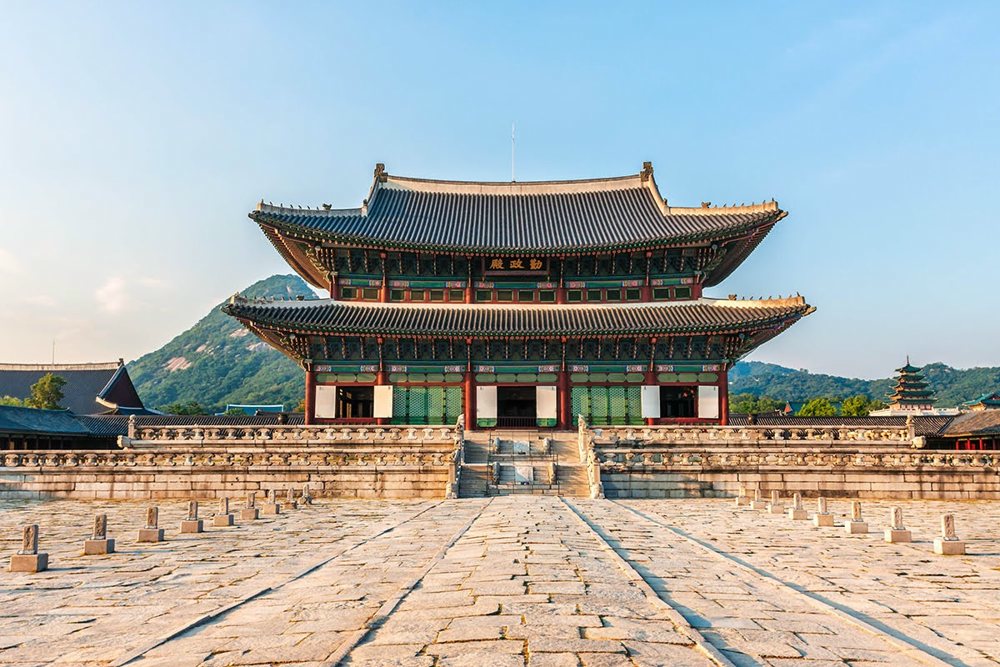
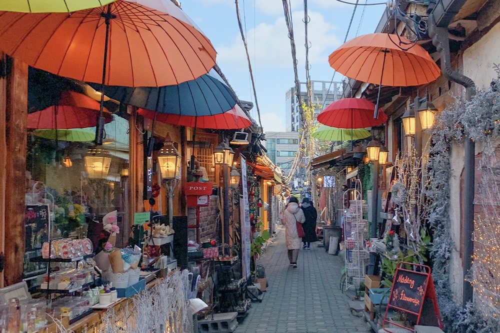
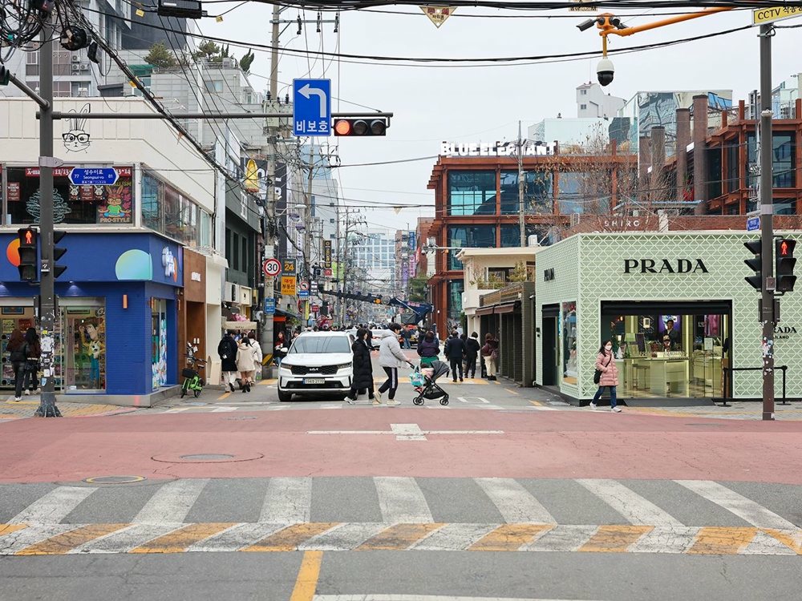
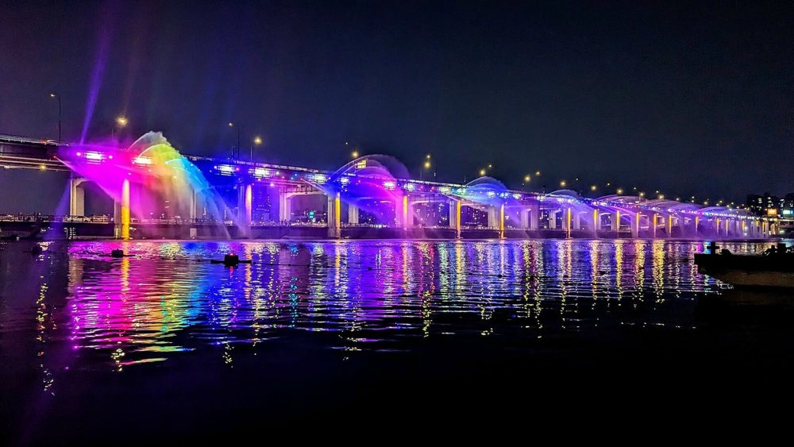
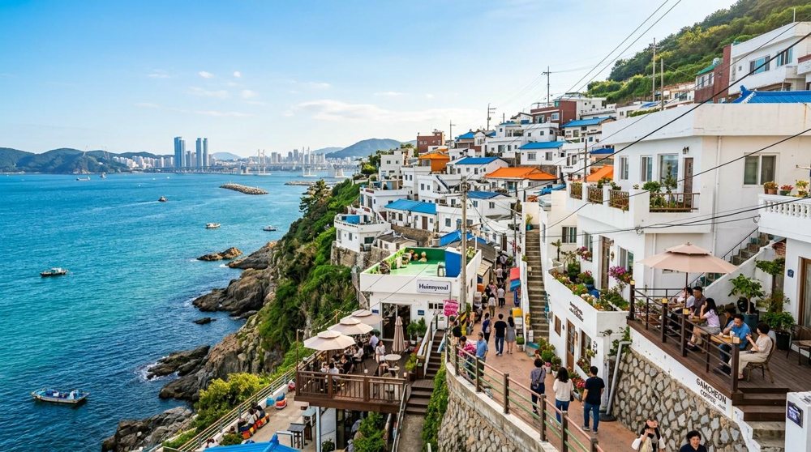
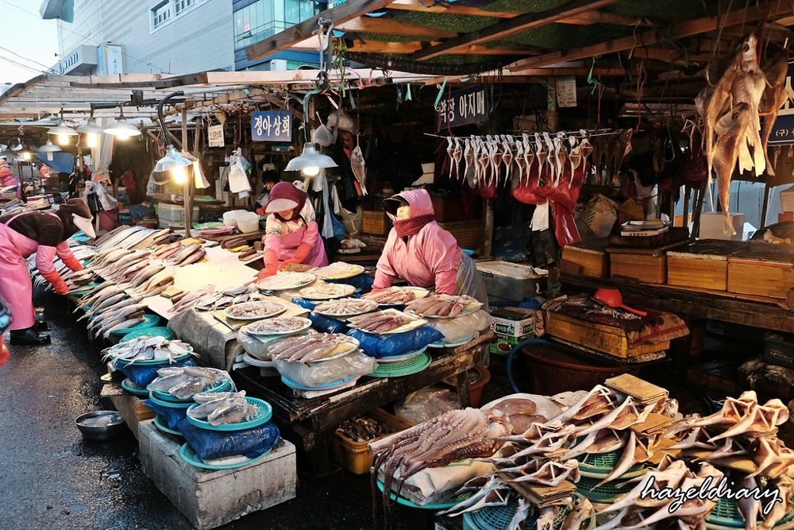
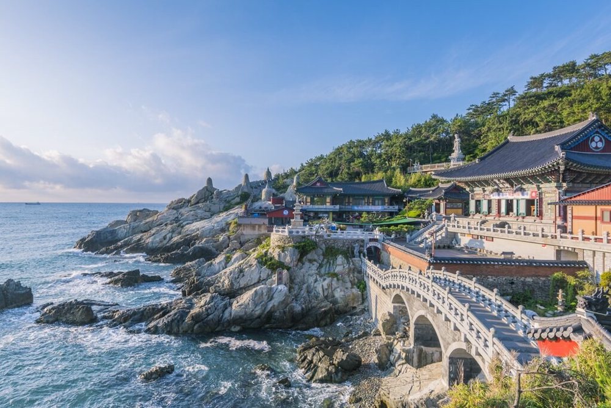
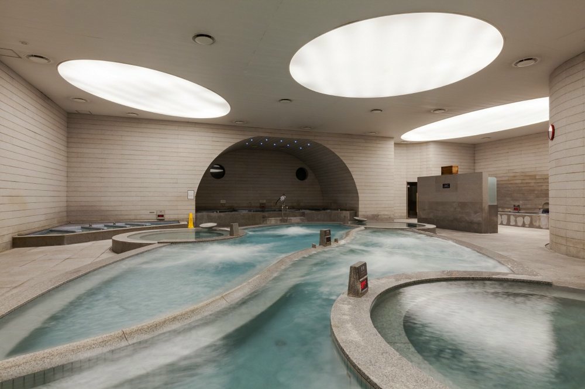
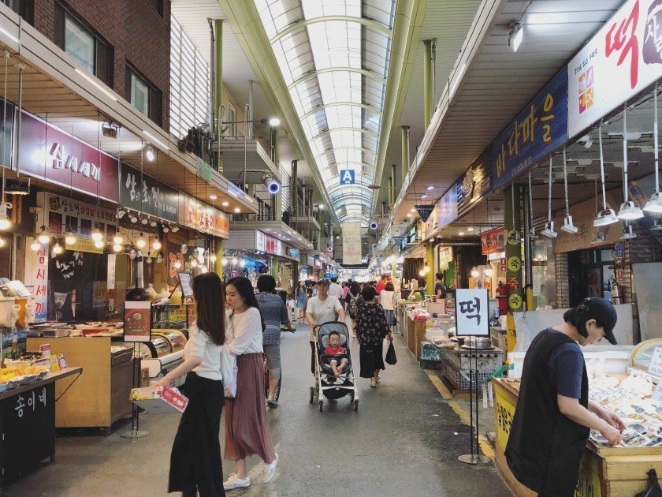

仁川机场 T1
韩国 10月2日 14:15 / 北京 13:15
距抵达 · 航班号与出发时刻未提供
留一点时间给街角的小店，也留一点自由给同行的人。我们的韩国六日旅行控制台。
单文件 · 离线可读景点定位 ↗双支线自由同行行程时刻默认韩国当地时间 KST（UTC+9），比北京时间快1小时。倒计时按绝对时间计算，不受手机所在时区影响。交通信息沿用前版行程，未显示的航班号、起飞信息与退房截止时间不作推测，请以原订单复核。
韩国 10月2日 14:15 / 北京 13:15
距抵达 · 航班号与出发时刻未提供
10月2日入住 → 10月5日退房
距计划入住 · 17:00非酒店保证时间
韩国 10:58—13:42 / 北京 09:58—12:42
距发车 · 10月5日
10月5日入住 → 10月7日凌晨离店
距计划到店 · 未到入住时间则寄存行李
韩国 10月7日 07:45 / 北京 06:45
距起飞 · 04:40预约送机
韩国 10月4日 19:00 / 北京 18:00
距开场 · 韩国18:00提前到场
落地日轻一点，把第一晚留给明洞的灯光与乙支路的小酒馆。
线路表示游览顺序，不表示道路、轨道或实际导航。当天Google路线按片区/支线分段；胶囊需另购票，地图不代表运营线路。
从宫殿到韩屋咖啡，再向西切换到望远与弘大的年轻日常。


线路表示游览顺序，不表示道路、轨道或实际导航。当天Google路线按片区/支线分段；胶囊需另购票，地图不代表运营线路。
上午一起逛圣水，下午分流。看秀组直接去弘大，不看秀组继续汉南与汉江。


线路表示游览顺序，不表示道路、轨道或实际导航。当天Google路线按片区/支线分段；胶囊需另购票，地图不代表运营线路。
两组不必在同一时间赶到汉江：看秀组可留在弘大，晚间回酒店会合。18:00是订单要求到场时间，不是开演时间。
10:58—13:42 KTX 029。下午白浅村喝咖啡，晚上用一条步行线逛南浦市场群。


线路表示游览顺序，不表示道路、轨道或实际导航。当天Google路线按片区/支线分段；胶囊需另购票，地图不代表运营线路。
东海岸是今天的主角。行程较满，泡汤不是额外硬塞：在Centum City分流，之后去广安里会合。

线路表示游览顺序，不表示道路、轨道或实际导航。当天Google路线按片区/支线分段；胶囊需另购票，地图不代表运营线路。

20:20在Centum City约定入口集合，再一起前往广安里。看完整天＋泡汤会很赶；累了就缩短海云台市场，或泡汤后直接回酒店。包车可在Centum City结束，晚间转场与返程需另约车或确认超时费用。
03:50起床，04:40提前预约的车辆来接。返程日不安排景点，给机场手续留足余量。

线路表示游览顺序，不表示道路、轨道或实际导航。当天Google路线按片区/支线分段；胶囊需另购票，地图不代表运营线路。